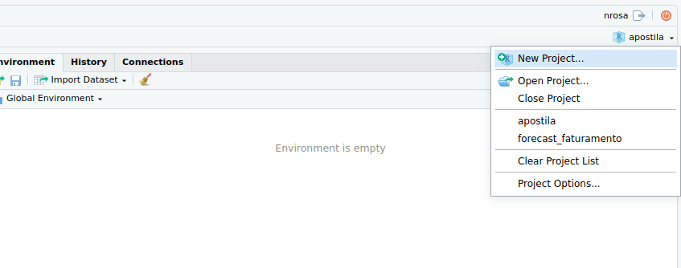
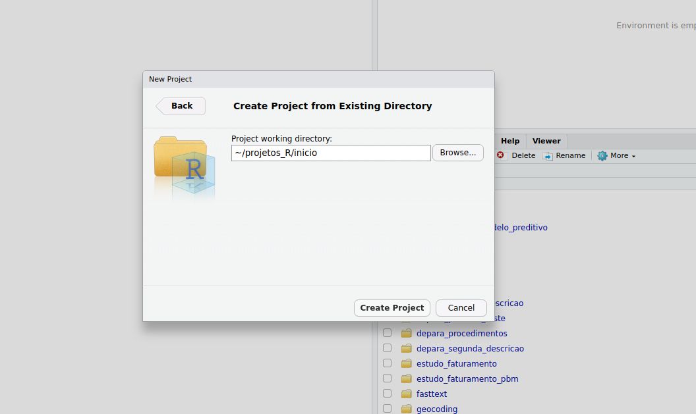

R - Básico
R em Container
Agora que já se sabe como subir imagens de docker, vamos subir uma de R studio server com vários pacotes instalados para poder praticar.
CASO NÃO QUEIRA PASSAR POR ISSO/ JÁ TEM UMA VERSÃO DO R INSTALADA E APENAS QUER VER UNS COMANDINHOS PULE PARA PROCESSA ETAMA (OLHE O TABLE OF CONTENTS DO LADO DIREITO)
Primeiro, vamos criar uma pasta de trabalho para o docker-compose.yml que iremos utilizar (assumindo que estamos num Linux, caso não esteja faça como achar melhor no seu sistema).
mkdir /home/${USER}/docker_compose_rstudio
Vamos viajar lá para dentro.
cd /home/${USER}/docker_compose_rstudio
Agora vamos criar uma pasta persistente para montarmos dentro do container. (Caso queira saber mais sobre isso olhe o tutorialzinho de docker que eu fiz, também aqui no VUGUDUM)
mkdir /home/${USER}/Projetos_R
Criar um arquivo docker-compose.yml já com tudo dentro (Coloque uma senha melhor para sua pessoa). Esta imagem zegkreist/r-dl-cpu foi criada por mim, ela possui quase tudo que um cientista de dados precisa (por isso ela é gigante ~ 9GB, caso queira outra com RStudio se sinta tranquilo para fazer o que você “querÊ”)
echo "
version: '2'
services:
r-dl-cpu_teste:
image: zegkreist/r-dl-cpu
container_name: r_server_1
restart: always
environment:
- USER=$USER
- USERID=1000
- PASSWORD=123facil
ports:
- "8787:8787"
volumes:
- /home/${USER}/Projetos_R:/home/teste/Projetos_R:rw " > /home/${USER}/docker_compose_rstudio/docker-compose.yml
Suba o serviço do rstudio server utilizando o docker-compose
docker-compose up -d
Acesse em http://127.0.0.1:8787 se for na sua máquina local ou http://ip_da_sua_instancia:8787. O login será seu usuário (rode echo $USER no console para descobrir) e a senha será a que você escolheu. Caso esteja numa instância remota que fique claro que a conexão aqui é apenas HTTP, para transforma-la em HTTPS precisa fazer um rolê aí que não irei explicar aqui, pois não é o foco.
Sua pessoa chegará numa tela parecida com essa.
Observe que há 4 áreas principais
- Source: onde está o editor de códigos e arquivos txt
- Environment/History/Conn/Git: Onde mostra os objetos declarados (há também outras abas, como history dos comandos rodados, connections, git, etc)
- Console: Onde os script são executados (há também outras abas, como terminal em que você pode executar comandos no console do seu OS, como estamos dentro de um serviço em container este terminal é sobre o OS do container, um Debian)
- Files/Packages/Plot/Help: Aqui está uma espécie de ‘navegador’, você pode olhar os arquivos nas pastas vizinhas, olhar as figuras geradas pelo R, usar o Help para pesquisa de comandos, etc.
Antes de começarmos a praticar vamos criar um projeto. Um projeto no R possui um work directory, seta o “home” do projeto como este work directory, salva o histórico de códigos rodados neste projeto, facilita commit utilizando o git, assim como o push para o repositório. Então, SEMPRE faça as coisas dentro de um projeto, melhor organização .. melhor código.
Vamos criar uma pasta para o projeto, navegue para dentro da pasta Projetos_R clique em New Folder e crie uma nova paste com o nome do projeto, pode ser inicio.

Agora vamos criar um novo projeto nesta pasta, para isso vá no canto direito superior em:

Clique em diretório já existente e selecione a pasta

E CRIE SEU PROJETOOO!

Pronto, estamos dentro de um projeto mais organizado e controlado, todo script que salvar será nessa sua pasta criada. Vamos iniciar um novo script, no canto esquerdo superior há um sinal de positivo em verde sobre uma folha branca, clique nele e vá em Rscript.
Agora podemos começar a brincar com o R!!!!
Objetos
O R é uma linguagem funcional, tudo e qualquer coisa no R é uma chamada de função, porém algumas coisas podem ser vistas como objetos, são elas:
- Vetor
- Matriz
- Data-frame
- Lista
Há pacotes que possuem versões alternativas desses objetos como veremos mais a frente, mas veremos o que está no base por enquanto.
Vetores
O vetor é um array de uma dimensão, ou uma matriz \(1 \times n\). Há várias formas de declarar um vetor. Podemos declarar numeric, integer, character, date, int64, etc, veja algumas delas:
Diretamente.
a <- c(1,2,3,4)
a
## [1] 1 2 3 4
Usando uma sequência que pula de um em um.
a <- 1:4
a
## [1] 1 2 3 4
Usando a função de sequência informando a quantidade que deve ser pulado.
a <- seq(1, 4, by = 1)
a
## [1] 1 2 3 4
Usando uma função que repete um determinado valor \(n\) vezes.
a <- rep(1, 10)
a
## [1] 1 1 1 1 1 1 1 1 1 1
b <- rep("eita", 3)
b
## [1] "eita" "eita" "eita"
A primeira posição do vetor é 1 e usamos a função [.
a <- 1:10
#primeira posicao
a[1]
## [1] 1
#ultima posicao
a[length(a)]
## [1] 10
#as primeiras 4 posicoes
a[1:4]
## [1] 1 2 3 4
b <- LETTERS
b[1:10]
## [1] "A" "B" "C" "D" "E" "F" "G" "H" "I" "J"
#output de length(a)
length(a)
## [1] 10
Matrizes
Assim como no C++ uma matriz pode ser vista como um vetor de vetores de mesmo tamanho. No R a matriz deve ser apenas de um tipo, ou seja, todas as colunas devem ser do mesmo tipo, como numeric, character, etc. Para declarar uma matriz primeiro e necessário declarar um vetor e reposicioná-lo com a função matrix. Por exemplo:
vetor_inicial <- 1:9
matriz <- matrix(data = vetor_inicial,
ncol = 3,
byrow = T
)
matriz
## [,1] [,2] [,3]
## [1,] 1 2 3
## [2,] 4 5 6
## [3,] 7 8 9
data: Informo o vetor que será reposicionadoncol: informo quantas colunas a matriz terábyrow: informo como será a distribuição
Se fizermos com byrow = F temos:
matriz <- matrix(data = vetor_inicial,
ncol = 3,
byrow = F
)
matriz
## [,1] [,2] [,3]
## [1,] 1 4 7
## [2,] 2 5 8
## [3,] 3 6 9
Para sabermos a dimensão da matriz basta utilizar dim(matriz).
O modo de acesso é semelhante ao vetor, utilizando a função [.
#primeira posicao
matriz[1,1]
## [1] 1
#segunda posicao
matriz[1,2]
## [1] 4
#primeira linha
matriz[1,]
## [1] 1 4 7
#primeira coluna
matriz[,1]
## [1] 1 2 3
Podemos ainda nomear as colunas ou linhas e chamá-las pelo nome, veja:
colnames(matriz) <- c("primeira", "segunda", "terceira")
matriz[,"primeira"]
## [1] 1 2 3
#ou ainda um conjunto de colunas
matriz[, c("primeira", "segunda")]
## primeira segunda
## [1,] 1 4
## [2,] 2 5
## [3,] 3 6
Repare que, eu declarei um vetor de nomes c("primeira", "segunda") dentro do local de definição das colunas, eu poderia ter feito anteriormente, veja:
subset_c <- c("primeira", "segunda")
matriz[, subset_c]
## primeira segunda
## [1,] 1 4
## [2,] 2 5
## [3,] 3 6
Data-frame
O data-frame é um ‘objeto’ semelhante à uma matriz, porém necessita de ter as colunas nomeadas. Cada coluna é um vetor independente do outro, podendo assim ser de tipos diferentes. Há também formas diferentes de acesso ao data-frame.
Vamos declarar um data-frame para podermos explorá-lo.
dados <- data.frame(id = 1:10, #integer
letras = LETTERS[1:10], #character factor
numeros = runif(n = 10, min = 1, max = 100) #numeric
)
head(dados)
## id letras numeros
## 1 1 A 98.08171
## 2 2 B 43.00829
## 3 3 C 26.86298
## 4 4 D 40.94583
## 5 5 E 16.11603
## 6 6 F 48.42628
Podemos acessar o data-frame de forma semelhante à matriz, veja:
dados[1,] # Primeira linha
## id letras numeros
## 1 1 A 98.08171
dados[,1] # Primeira coluna
## [1] 1 2 3 4 5 6 7 8 9 10
dados[, "letras"] #coluna letras
## [1] A B C D E F G H I J
## Levels: A B C D E F G H I J
#podemos acessar ainda utilizando o operador $, veja:
dados$letras # Desta forma acessamos o vetor diretamente
## [1] A B C D E F G H I J
## Levels: A B C D E F G H I J
Listas
As listas são contêineres que podem guardar qualquer tipo de objeto do R em seus slots, seria quase uma espécie de JSON (ou map em outras linguagens). Veja a seguinte declaração:
lista <- list(
primeira_pos = 1:3,
segunda_pos = data.frame(col_1 = 1:10),
terceira_pos = list(
inception = "YEAH"
)
)
Vamos acessar seus conteúdos. Basicamente utilizaremos a função [[ e o operador (que também é uma função) $.
lista["primeira_pos"]
## $primeira_pos
## [1] 1 2 3
# os seguintes abaixo sao equivalentes
lista[[1]] # vetor de fato
## [1] 1 2 3
lista$primeira_pos # vetor de fato
## [1] 1 2 3
Agora, navegando pelo data.frame da segunda posição.
#acessando primeira coluna do data.frame armazenado na lista
lista[[2]]$col_1
## [1] 1 2 3 4 5 6 7 8 9 10
lista[["segunda_pos"]]# data.frame
## col_1
## 1 1
## 2 2
## 3 3
## 4 4
## 5 5
## 6 6
## 7 7
## 8 8
## 9 9
## 10 10
lista$segunda_pos # data.frame
## col_1
## 1 1
## 2 2
## 3 3
## 4 4
## 5 5
## 6 6
## 7 7
## 8 8
## 9 9
## 10 10
lista$segunda_pos$col_1 # primeira coluna do data.frame
## [1] 1 2 3 4 5 6 7 8 9 10
lista$segunda_pos$col_1 # primeira coluna do data.frame
## [1] 1 2 3 4 5 6 7 8 9 10
Agora acessando a lista dentro da lista.
lista$terceira_pos # lista segundo nivel
## $inception
## [1] "YEAH"
lista[["terceira_pos"]][["inception"]] # resultado da lista segundo nivel
## [1] "YEAH"
lista[["terceira_pos"]]$inception # resultado da lista segundo nivel
## [1] "YEAH"
lista$terceira_pos$inception # resultado da lista segundo nivel
## [1] "YEAH"
Tipos
No R temos basicamente numeric (seria um float), integer, character, factor (um tipo especial de character), posix/ date (um tipo especial de character), logical, complex. Existem alguns pacotes do R que expandem os tipos, adicionando coisas como int64 por exemplo. Com a função class é possível observar o tipo de variáveis, vejamos alguns exemplos:
require(lubridate) # pacote que adiciona tipo date
## Loading required package: lubridate
##
## Attaching package: 'lubridate'
## The following object is masked from 'package:base':
##
## date
a <- .1
b <- 1L
c <- 'eita'
d <- "Eita"
e <- factor(c('a','b',"c","D"))
f <- Sys.time()
g <- 1+1i
h <- c(T,F, TRUE, FALSE)
i <- c(1,2,"a",T) # CUIDADO PARA NÃO MISTURAR OS TIPOS
j <- c(1,2,T,F) # CUIDADO PARA NÃO MISTURAR OS TIPOS
l <- lubridate::as_date(Sys.time())
cat(paste0(c("Tipo: a ", class(a), "\n",
"Tipo: b ", class(b), "\n",
"Tipo: c ", class(c), "\n",
"Tipo: d ", class(d), "\n",
"Tipo: e ", class(e), "\n",
"Tipo: f ", class(f), "\n",
"Tipo: g ", class(g), "\n",
"Tipo: h ", class(h), "\n",
"Tipo: i ", class(i), "\n",
"Tipo: j ", class(j), "\n",
"Tipo: l ", class(l), "\n"
),
collapse = " "
)
)
## Tipo: a numeric
## Tipo: b integer
## Tipo: c character
## Tipo: d character
## Tipo: e factor
## Tipo: f POSIXct POSIXt
## Tipo: g complex
## Tipo: h logical
## Tipo: i character
## Tipo: j numeric
## Tipo: l Date
Operações
No R podemos fazer as operações básicas +-*/^, mas também há outras como %*%, %% e %in% e até mesmo filtros (que aqui estou chamando de operações).
Os seguintes +-*/^ tem caráter de operação escalar, veja os exemplos:
a <- c(1,2,3,4)
b <- c(2,2,2,2)
1+1 # escalar
## [1] 2
10*5 # escalar
## [1] 50
2^4 #escalar
## [1] 16
a*2 # escalar
## [1] 2 4 6 8
a/2 # escalar
## [1] 0.5 1.0 1.5 2.0
a^2 # escalar
## [1] 1 4 9 16
a*b #escalar
## [1] 2 4 6 8
a+b #escalar
## [1] 3 4 5 6
a^2 # escalar
## [1] 1 4 9 16
O operador %% é o resto de uma divisão, e %/% a parte inteira de uma divisão, então:
4%%3
## [1] 1
4%%2
## [1] 0
7%/%2
## [1] 3
10%/%2
## [1] 5
O operador %*% é a multiplicação de matrizes.
A <- matrix(c(1:9), ncol = 3, byrow = T)
B <- matrix(c(1:9), ncol = 3, byrow = F)
A%*%B # Multiplicacao de matriz
## [,1] [,2] [,3]
## [1,] 14 32 50
## [2,] 32 77 122
## [3,] 50 122 194
A+B # soma escalar
## [,1] [,2] [,3]
## [1,] 2 6 10
## [2,] 6 10 14
## [3,] 10 14 18
A*B # multiplicacao escalar
## [,1] [,2] [,3]
## [1,] 1 8 21
## [2,] 8 25 48
## [3,] 21 48 81
A^2 # potencia escalar
## [,1] [,2] [,3]
## [1,] 1 4 9
## [2,] 16 25 36
## [3,] 49 64 81
A%*%A #potencia matricial
## [,1] [,2] [,3]
## [1,] 30 36 42
## [2,] 66 81 96
## [3,] 102 126 150
HAIL to all mighty PIPE
O R possui um operador peculiar provindo de um pacote chamado magrittr. Ele oferece uma facilidade viciante, por isso ficou tão popular que é comum quando um novo pacote está sendo feito para o R os autores implementam as features necessárias para que o pipe também seja utilizado em conjunto com suas funções. Como dito anteriormente, tudo no R é uma função, e estas funções podem ser redefinidas, podemos inclusive trocar os significados dos operados +-*/, mas isto seria besteira.
O pipe é um operador que faz o seguinte: lhs %>% lhs, seu comportamento é passar o lhs para ser avaliado em lhs. Então, seja x algum objeto e foo uma função, assim x %>% f é equivalente a f(x). Caso f necessite múltiplos argumentos, o comportamento padrão é que o objeto x seja colocado na primeira posição de f, ou seja, x %>% f(y) é equivalente a f(x,y). Podemos escolher a posição que será inserido da seguinte forma x %>% f(y, .) é equivalente a f(y,x).
Mas por que o pipe é tão utilizado? Imagine que tenhamos um objeto xe necessitamos de fazer várias operações encadeadas, o pipe permite que o código fique mais organizado. EXEMPLO:
Vamos criar um vetor x, calcular seu comprimento e calcular a média de uma amostra aleatória de mesmo tamanho. É um exemplo bobo, mas já ilustra o potencial da criança.
x <- 1:100
#modo 1
n <- length(x)
result <- sample(1000, size = n)
result <- mean(result)
#modo 2
result <- sample(1000, size = length(x))
result <- mean(result)
#modo 3
result <- mean(sample(1000, size = length(x)))
# THE KING
result <- x %>%
length() %>%
sample(1000, size = .) %>%
mean()
Observe que utilizando o pipe, o código basicamente vira um bullet de uma apresentação de slide, a leitura é direta. Vou colocar um exemplo de código aqui embaixo, veja que não explicarei nada do código, esta apostila é para iniciante na linguagem (então suponho que não está familiarizado com o R) e mesmo assim terá uma capacidade alta de compreensão do que está sendo feito.
Seja dados um conjunto de dados qualquer.
result <- dados %>%
dplyr::filter(ano >= "2018-01-01") %>%
dplyr::group_by(CodProcedimento) %>%
dplyr::summarise(media = mean(ValorUtilizacao))
Apenas leia, é literalmente uma receita de bolo.
Pegue dados
Filtre para ano >= “2018-01-01”
Agrupe por CodProcedimento
Calcule a média do Valor Utilização
Vamos reescrever isso de um jeito nojento.
result <- dplyr::summarise(dplyr::group_by(dplyr::filter(dados,
ano >= "2018-01-01"),
CodProcedimento),
media = mean(ValorUtilizacao)
)
É bem fácil de entender até a parte do dplyr::summarise, depois disso…
Porém não iremos utilizar o pacote dplyr para fazer manipulações, é bonitinho porém não performa bem.
Filtros e subsets
No R devemos evitar o máximo possível fazer laços (for ou while). Temos outras ferramentas para busca e para aplicar funções repetidamente, como as funções da família apply.
Abaixo mostrarei como fazer subsets e filtros.
Image que tenhamos um vetor que gostaríamos de selecionar todos os número maior que um threshold. Podemos utilizar vetores lógicos para fazer essa seleção. Primeiro, vamos demonstrar a criação de um vetor lógico.
Suponha o seguinte vetor:
a <- runif(20,1,10)
Podemos criar um vetor lógico indicador, vamos supor que gostaríamos de marcar todo número menor que 5.
vetor_logico <- a < 5
vetor_logico
## [1] FALSE FALSE FALSE FALSE TRUE FALSE FALSE FALSE FALSE TRUE TRUE
## [12] TRUE TRUE TRUE FALSE TRUE TRUE FALSE FALSE TRUE
Agora podemos selecionar posições em a informando quem ‘desligar’ e a quem retornar, veja:
a[vetor_logico]
## [1] 1.032027 4.410348 4.270202 2.854233 4.884520 3.757685 3.068622 3.834133
## [9] 2.706487
# podemos escrever diretamente
a[a < 5] # quero a, onde a é menor que 5
## [1] 1.032027 4.410348 4.270202 2.854233 4.884520 3.757685 3.068622 3.834133
## [9] 2.706487
Agora queremos as posições de a que são menores que 5
which(a < 5 )
## [1] 5 10 11 12 13 14 16 17 20
pos <- which(a < 5)
a[pos]
## [1] 1.032027 4.410348 4.270202 2.854233 4.884520 3.757685 3.068622 3.834133
## [9] 2.706487
Podemos também negar um vetor lógico (basicamente pegando o contrário)
a[!vetor_logico]
## [1] 6.385984 8.736175 7.104037 8.203882 6.494243 6.770594 9.450312
## [8] 6.899342 7.313048 7.928868 7.744817
Os vetores lógicos possuem algumas propriedades, por exemplo TRUE = 1 e FALSE = 0, então podemos fazer operações com isso. Queremos saber quantos números em a são menores que 5, então podemos fazer assim:
sum(a < 5)
## [1] 9
# ou assim
length(a[a < 5])
## [1] 9
Vamos zerar os números menores que 5:
a*!vetor_logico
## [1] 6.385984 8.736175 7.104037 8.203882 0.000000 6.494243 6.770594
## [8] 9.450312 6.899342 0.000000 0.000000 0.000000 0.000000 0.000000
## [15] 7.313048 0.000000 0.000000 7.928868 7.744817 0.000000
# ou podemos trocar no proprio objeto
a[a < 5] <- 0
a
## [1] 6.385984 8.736175 7.104037 8.203882 0.000000 6.494243 6.770594
## [8] 9.450312 6.899342 0.000000 0.000000 0.000000 0.000000 0.000000
## [15] 7.313048 0.000000 0.000000 7.928868 7.744817 0.000000
Podemos utilizar outros vetores de mesmo tamanho para fazer esse filtro, caso as informações sejam casadas. Vamos supor um data.frame e trabalhar com ele para esses filtros
dados <- data.frame(id = 1:20, #integer
letras = LETTERS[1:20], #character factor
numeros = runif(n = 20, min = 1, max = 100) #numeric
)
Queremos as letras da coluna letras que possuam um número da coluna numeros menor que 50.
dados$letras[dados$numeros < 50]
## [1] B D E F G H K N O P R S T
## Levels: A B C D E F G H I J K L M N O P Q R S T
Podemos definir um outro data.frame com esse filtro
dados1 <- dados[dados$numeros < 50, ]
head(dados1)
## id letras numeros
## 2 2 B 1.518690
## 4 4 D 3.384159
## 5 5 E 23.287412
## 6 6 F 28.360873
## 7 7 G 9.157979
## 8 8 H 41.689610
Nós usamos muito os vetores lógicos, em todos os lugares. Porém não vou me prolongar aqui, farei isso quando estivermos falando de data.table que é redesenho do data.frame. É utilizando ele que faremos todas as manipulações alá banco de dados, por que ele? por isso:
Máquina do benchmark.
Intel® Xeon® CPU E5-2660 v3 @ 2.60GHz
20 CPU CORE
125.8 GB RAM
Laços
Como disse antes, é bom que evitemos laços ao máximo, mas há momentos que não tem tal possibilidade. Utilizando as funções da família apply podemos substitui praticamente qualquer laço sem o overhead gigantesco (se comparado a outras linguagens) que ele causa. Porém o código fica confuso, é mais complicado pensar na arquitetura da operação, etc. Então há lugares que de fato é proveitoso usar um laço, normalmente quando os planetas se alinham da seguinte forma:
O passeio é curto: quando é necessário poucas iterações ( menor que 1000).
A carga é pesada: quando o que se calcula no seu interior é pesado a tal ponto que o overhead gerado pelo loop em si seja irrelevante.
Por que o número 1000 em poucas iterações? Normalmente quando se precisa de mais iterações do que isso significa que o processo interno é leve, feito em batchs, há outras formas ( e muito melhores) para se lidar com isso do que um loop. Sua pessoa deve usar e abusar da vetorização que o R oferece. Sempre que criar uma função, pense em aplicá-la para o vetor ou matriz inteira e não de forma escalar.
For
O exemplo que usarei aqui é simples, lembre-se que contas leves não deve ser feito num loop.
result <- numeric(20) # sempre que possível pre aloque o vetor de resultados
for(i in 1:20){
result[i] <- i^2
}
result
## [1] 1 4 9 16 25 36 49 64 81 100 121 144 169 196 225 256 289
## [18] 324 361 400
Vamos testar uns tempos?
rbenchmark::benchmark(
"sem_alocar" = {
result <- c()
for(i in 1:2000){
result[i] <- i^2
}
},
"pre_alocado" = {
result <- numeric(2000) # sempre que possível pre aloque o vetor de resultados
for(i in 1:2000){
result[i] <- i^2
}
},
"vetorizado" ={
(1:2000)^2
},
order = "relative",
replications = 100,
columns = c("test", "replications", "relative", "elapsed")
)
## test replications relative elapsed
## 3 vetorizado 100 1 0.001
## 2 pre_alocado 100 240 0.240
## 1 sem_alocar 100 273 0.273
Observe a velocidade relativa, o método vetorizado é a base, observe que o método sem_alocar é o mais demorado, quantas vezes mais lento? Muito não?!? Agora observe que caso o tamanho do result seja pré alocado é um pouco mais rápido, mas nem de longe comparado com a versão vetorizada.
Temos também as condições que podem ser inseridas num for para quando satisfeita alguma condição específica:
break: Para o loop, saindo delenext: Pula essa iteração indo para a próxima
While
Particularmente acho que da para contar nos dedos de uma mão as vezes em que utilizei o while, acredito que apenas em simulações, esperando algo convergir, etc. Segue o exemplo:
result <- numeric(20)
i <- 1
while(i <= 20){
result[i] <- i
i <- i+1
}
As condições nexte break também funcionam para o while.
IF … or ELSE!!
A lógica para esses caras é como para qualquer outra linguagem, tem apenas um porém em relação à uma função em específico ifelse que pode facilitar algumas coisas.
A estrutura se inicia por um if com uma determinada condição e logo depois um else opcional. Lembrando que esta condição deve ter comprimento 1, não podendo ser um vetor lógico.
a <- 1
if(a == 1){
"EITA PORRA"
}else{
"Eita nada"
}
## [1] "EITA PORRA"
a <- 0
if(a == 1){
"EITA PORRA"
}else{
"Eita nada"
}
## [1] "Eita nada"
a <- 0
if(a != 1){
"EITA PORRA"
}
## [1] "EITA PORRA"
a <- 0
if(a > 1){
"EITA PORRA"
} # nao retorna nada
A função ifelse permite ser aplicada num vetor lógico.
a <- c(T,T,F,T,F,F)
result <- ifelse(test = a,
yes = "EITAAAA",
no = "EITA NAAOO"
)
result
## [1] "EITAAAA" "EITAAAA" "EITA NAAOO" "EITAAAA" "EITA NAAOO"
## [6] "EITA NAAOO"
Onde o test é uma condição ou um vetor de condições, como embaixo:
a <- runif(10,1,10)
result <- ifelse(test = a < 5,
yes = "EITAAAA",
no = "EITA NAAOO"
)
dados <- data.frame(A = a,
condicoes = a < 5,
saida = result
)
dados
## A condicoes saida
## 1 7.588302 FALSE EITA NAAOO
## 2 5.560936 FALSE EITA NAAOO
## 3 4.385240 TRUE EITAAAA
## 4 2.665477 TRUE EITAAAA
## 5 2.307467 TRUE EITAAAA
## 6 2.449290 TRUE EITAAAA
## 7 2.920070 TRUE EITAAAA
## 8 8.914990 FALSE EITA NAAOO
## 9 3.729306 TRUE EITAAAA
## 10 4.224658 TRUE EITAAAA
Funções
No R tudo são funções, então também temos que fazer nossas próprias funções. Para declarar uma função podemos deixar sem argumentos ou quantos quisermos. Eles podem ter valores default ou não. O ultimo valor a ser retornado que a função irá retornar
foo <- function(){
"eita"
}
foo1 <- function(){
"eita"
"eita_porra"
}
foo()
## [1] "eita"
foo1()
## [1] "eita_porra"
Ou ainda podemos deixar explicitado o que será retornado:
foo2 <- function(){
"eita"
"eita_porra"
return("isso aqui sera retornado")
}
foo2()
## [1] "isso aqui sera retornado"
Vamos colocar um argumento e com alguma “mastigação”:
foo3 <- function(argumento){
result <- paste0("Mastigando: ", argumento)
return(result)
}
foo3(argumento = "E I T A !1")
## [1] "Mastigando: E I T A !1"
Mas se tentarmos rodar sem especificar um argumento um erro é retornado. Tente rodar o seguinte comando no seu console.
foo3()
Podemos definir um valor default para este argumento:
foo4 <- function(argumento = "Valor Default"){
result <- paste0("Mastigando: ", argumento)
return(result)
}
foo4()
## [1] "Mastigando: Valor Default"
NÃO RECOMENDO, mas podemos utilizar uma função para alterar um valor no enviroment global do R. Semelhante a usar uma função que retorna void no c++ e usar ponteiros para alterar informações “in place”.
a <- 1:10
foo5 <- function(){
a[a < 5] <<- 100
}
Veja o vetor a como ele é:
a
## [1] 1 2 3 4 5 6 7 8 9 10
Vamos rodar a função que modifica inplace por referência.
foo5()
Agora vejamos a novamente.
a
## [1] 100 100 100 100 5 6 7 8 9 10
Loading |======—| 75%
Dados, vamos aprender a carregar dados. O R tem vários pacotes que nos permitem carregar praticamente qualquer tipo de dado, JSON, csv, txt, Rdata, RDS, até aqueles vindo de programas como excel, stata, access, SPSS, etc. Basta procurar, porém inicialmente nos preocupemos apenas com arquivos csv/txt e dados provindo de bancos.
CSV e TXT
Temos uma função milagrosa que consegue fazer o parse do arquivo texto e carregar em velocidades astronômicas, esta função também é proveniente do nosso querido e amado data.table. Ele também fornece uma função estupidamente rápida para escrever esses dados em csv ou txt.
Vamos primeiro criar um arquivo txt para podermos treinar os carregamentos, isto implica que primeiro iremos aprender a escrever para depois ler. Já vamos iniciando no data.table.
library(data.table) # No R devemos carregar as bibliotecas que iremos utilizar previamente
##
## Attaching package: 'data.table'
## The following objects are masked from 'package:lubridate':
##
## hour, isoweek, mday, minute, month, quarter, second, wday,
## week, yday, year
#####
# Observe que, além de ter carregado a blibioteca,
# eu tambem indiquei na funcao abaixo de qual biblioteca ela provem (utilizando data.table:: antes da funcao)
# este e um passo opcional, mas acredito que para um codigo em producao isso deve ser feito
#####
dados <- data.table::data.table(id = 1:50000,
numeros = runif(50000, 1, 100),
letras = sample(LETTERS, 50000, replace = T)
)
## vamos escrever
data.table::fwrite(dados, "dados_example.txt")
## Vamos rodar um comando no bash do linux para compactar o arquivo
system("gzip < dados_example.txt > dados_example.txt.gz")
A função fwrite se diz respeito à escrita de um arquivo texto no filesystem. Estou utilizando as configurações default, em que basicamente seleciona-se separador de campos como vírgula, strings que possuem o separador contido nelas estão entre aspas, e a primeira linha se trata do nome das colunas.
Explicando a compressão. A função system executa a string no console bash do linux. O que lemos nessa string? Eu aponto o arquivo .txt para o programa gzip da seguinte forma gzip < dados_example.txt e pego o resultado disso e coloco para o arquivo dados_example.txt.gz usando o apontamento >
Vamos verificar os tamanhos dos arquivos.
file.size("dados_example.txt.gz")/1000000 #mb
## [1] 0.586925
file.size("dados_example.txt")/1000000 #mb
## [1] 1.233302
Vamos carregar o arquivo original utilizando a função fread do data.table.
dados <- data.table::fread("dados_example.txt")
Carregando pelo arquivo comprimido
dados <- data.table::fread("zcat dados_example.txt.gz")
A função fread faz o parse automático do arquivo. Porém é possível adicionar argumentos a mais como qual string é responsável pela separação sep, qual o padrão de decimal utilizado no arquivo dec, e inúmeros outros. Para ver todos os argumentos procure pelo nome da função na aba de help do canto direito da IDE do Rstudio.
Leitura do banco de dados
Para se ler do banco de dados é necessário primeiramente criar uma conexão com o banco. Esta conexão pode ser feita de várias formas diferentes e cada banco de dados possui uma forma diferente. Para o SQL SERVER utilizaremos o driver ODBC oficial da Microsoft (que já se encontra nessa imagem de docker). Porém não temos um banco de testes aqui, farei um exemplo se conectando ao MySQL de um dos nosso servidores (mas mostrando um código dummy).
É necessário a criação de um objeto de conexão com o banco. Este objeto pode ser criado por inúmeros pacotes diferentes, aqui irei utilizar uma combinação do pacote DBI e RMariaDB. O MariaDB é um fork do próprio MySQL, dos mesmos criadores, que ocorreu quando este foi comprado. O conector do RMariaDB é eficiente e funciona bem com o MySQL.
## Carregando pacotes necessarios
library(DBI)
library(RMariaDB)
## Criando objeto de conexao
con <- DBI::dbConnect(RMariaDB::MariaDB(),
user='SUPER USUARIO',
password='SENHA FODA BAGARAI',
#dbname= database.,
dbname='DW_name_cliente',
host='192.168.134.63',
encoding = "latin1",
bigint = "character"
)
Agora que temos o objeto de conexão con, iremos utilizá-lo como operador para passar requisições para o banco. Vamos mudar uma configuração do banco, aumentar o limite de tempo para que ele corte o nossa conexão inexplicável.
DBI::dbExecute(con,
paste0("SET GLOBAL connect_timeout = 600000;")
)
O que fazemos? Utilizamos a função dbExecute e passamos o objeto de conexão com o qual ela irá lidar. Após isso passamos uma string que será executada, apesar de eu ter me utilizado da função paste0, poderíamos ter passado a string diretamente. A função paste0 nos permite compor strings utilizando valores de outros objetos.
Vamos agora executar uma query para puxar os dados para um objeto do R.
query <- "SELECT *
FROM T_FatoUtilizacao WHERE DtUtilizacao >= '2018-01-01' AND DtUtilizacao <= '2018-12-31';"
dados <- DBI::dbGetQuery(con, query) %>%
data.table::setDT()
Primeiro, crio um objeto com a consulta que será aplicada, depois utilizo da função dbGetQuery que executará a query armazenada no objeto query na conexão con. Após isso, redireciono a saída delas função com o operador %>% para a função setDT que irá transformar este objeto, in-place, num objeto data.table.